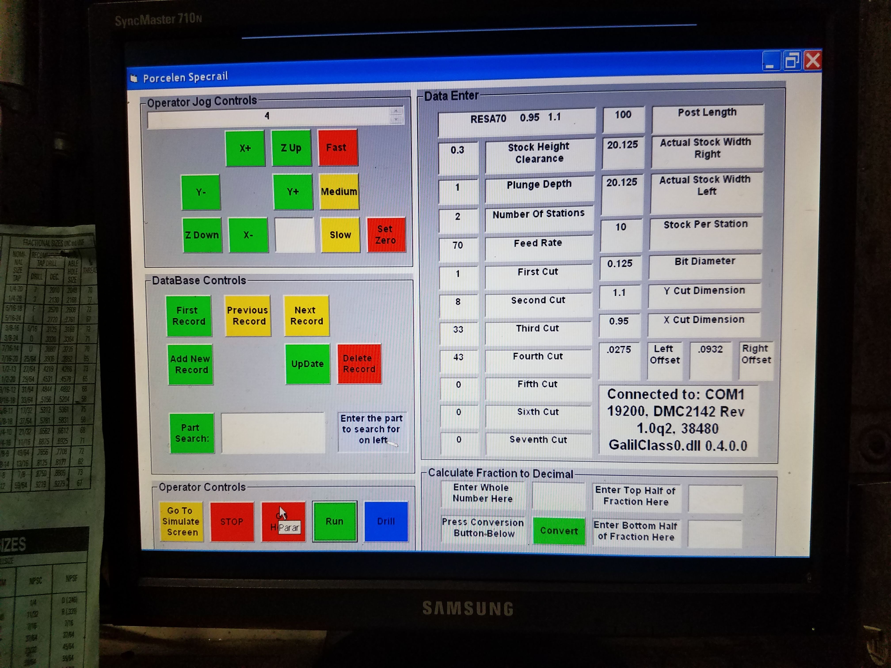
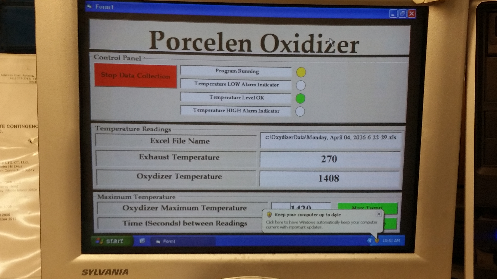
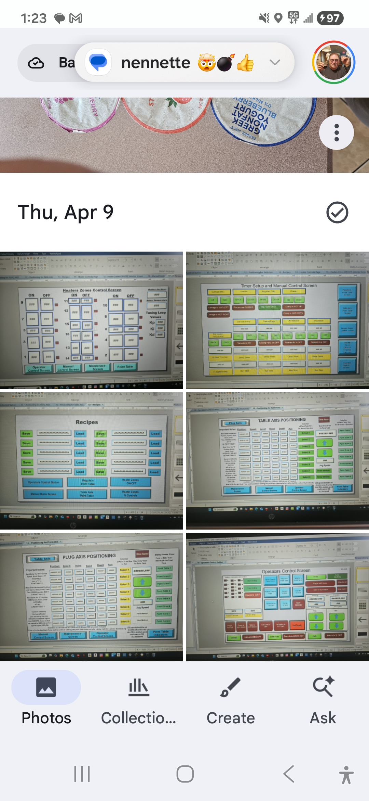
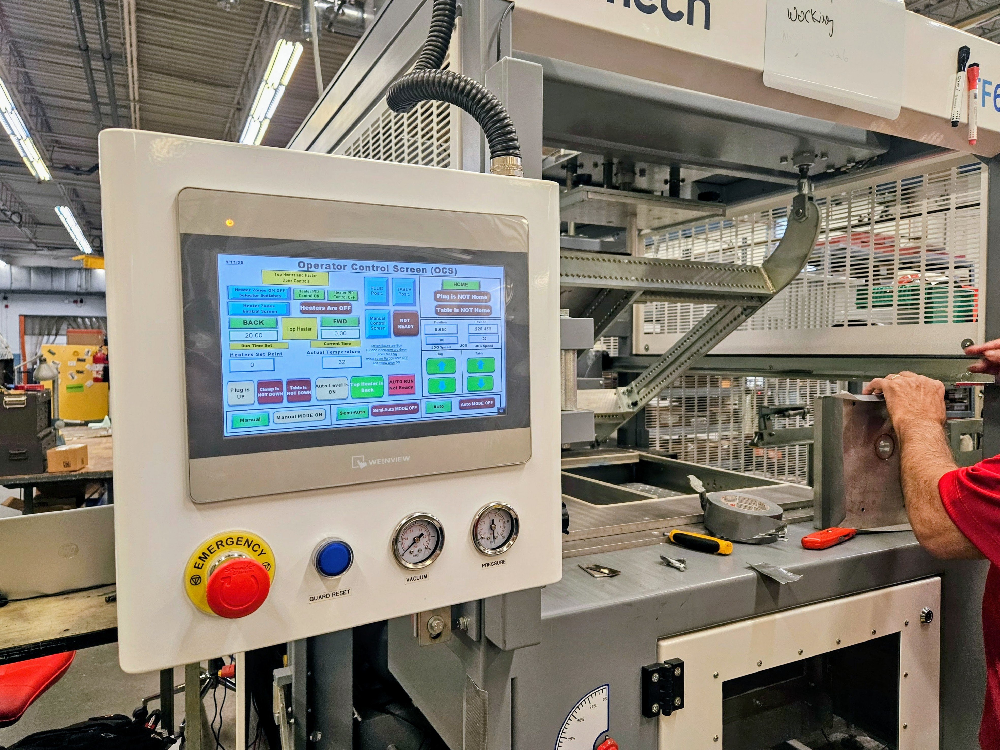
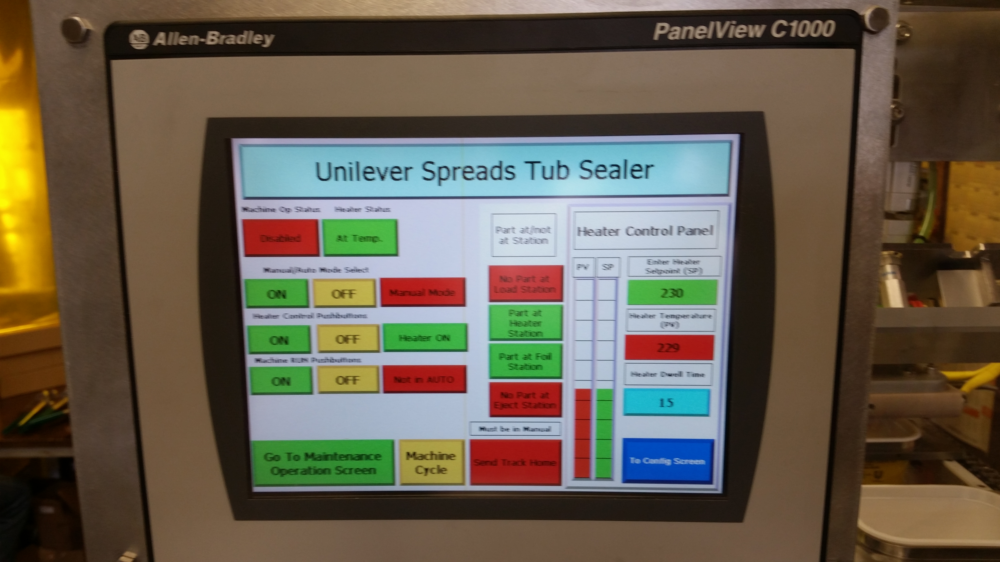

PLC Programming & Troubleshooting
Root-cause diagnostics, ladder logic updates, and cross-platform support including Allen-Bradley, Siemens, and Mitsubishi.
From urgent diagnostics to phased modernization, HiTek Solutions brings practical execution across industrial control systems.
Root-cause diagnostics, ladder logic updates, and cross-platform support including Allen-Bradley, Siemens, and Mitsubishi.
Legacy migration planning, side-by-side testing, and staged implementation to reduce downtime risk.
Operator-centered HMI design and synchronized control across networked machines.
Inspection, verification, and structured process data capture for quality and performance visibility.
Technical document assistants that improve troubleshooting speed and preserve operational knowledge.
Clear scoping, implementation planning, and practical handoff for maintainable long-term operation.
This engagement was executed to reduce operator injury risk on production Four-Slide machines through a standards-aligned safety architecture upgrade that preserved required production functionality.



This project delivered a complete controls redesign for an industrial router after repeated legacy servo-drive failures created reliability issues and operating friction.

This project focused on protecting product quality and environmental compliance by continuously monitoring oven conditions and creating a complete reporting trail required by the State of Connecticut.

This project measured automobile engine camshaft lobes at numerous points around each lobe and continuously evaluated dimensional conformance inside a live spreadsheet workflow. If a lobe was out of spec, the system immediately flagged it and prevented the part from being accepted.
Before this upgrade, the customer tested one switch at a time with a manual process that consumed significant operator time and introduced data-entry errors. In collaboration with their engineering team, we developed a new test fixture and automation workflow to validate switch behavior across descending and ascending cycles with reliable spreadsheet-based reporting and clear fail tracking.




This project delivered a full controls replacement and complete machine reprogramming for a Formech plastic forming system, including additional custom functions requested by the customer.
For a nationally recognized consumer packaged-goods manufacturer, HiTek Solutions worked alongside a mechanical design group to design and build a production machine capable of placing and sealing lids onto tubs with repeatable, production-ready performance.


We most often support industrial manufacturers in Connecticut and across the Northeast U.S. for PLC troubleshooting, controls upgrades, machine reliability, and modernization execution.
If your team is outside this region, contact us with scope, platform details, and schedule constraints. We can confirm whether remote support, travel-based support, or a phased hybrid model is the best fit.
Need more than controls implementation? See our AI and industrial data solutions for document-grounded troubleshooting acceleration and operator support workflows.
You can also review practical references in our technical resource center before starting a discussion.
Our strongest coverage is Connecticut, Massachusetts, Rhode Island, New York, New Jersey, New Hampshire, and Pennsylvania for industrial automation support engagements.
This includes PLC troubleshooting, controls integration, machine vision, motion-control reliability, and modernization planning for active production environments.
Do you provide PLC troubleshooting in Connecticut?
Yes. Connecticut is a primary service area for diagnostics, controls recovery, and reliability stabilization.
Can you support mixed-vendor control systems?
Yes. We work across Allen-Bradley, Siemens, Mitsubishi, and mixed legacy-modern architectures.
Can we engage you outside the Northeast?
Yes. We can scope remote, travel-based, or hybrid support based on urgency, complexity, and plant constraints.
Do you combine controls work with AI support?
Yes. We can layer AI knowledge workflows onto your controls and maintenance processes through our AI + Data services.
Share platform details and symptoms. We can help define next steps quickly.
Request Consultation